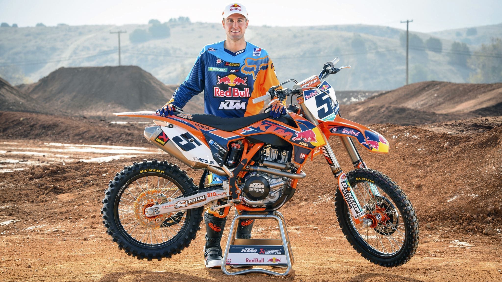

-
Travis Pastrana
#199Travis Alan Pastrana is an American professional motorsports competitor and stunt performer who has won championships and X Games gold medals in several disciplines, including supercross, motocross, freestyle motocross, and rally racing. He runs a show called Nitro Circus, and has competed in the Global RallyCross Championship and the Monster Jam circuit. Pastrana replicated three of daredevil Evel Knievel's most famous jumps without injury in record-breaking fashion while in Las Vegas. -
Chad Reed
#22Chad Reed is fourth, with his 44 victories. The Australian wrapped up two titles, in 2004 and 2008, and has enjoyed a long and fruitful career. -
James Stewart
#7James Stewart, with 50 victories, is possibly the most spectacular rider in SX, and the current rider with the most wins. 84 national titles up to the age of 16 says a lot about Stewart and his two AMA SX titles came in 2007 and 2009. -
Ryan Villopoto
#2Ryan Villopoto's 41 race wins. Kawasaki stalwart Villopoto's premature retirement in 2015 came after an attempt to crack the MX World Championship. After injury cut short that foray, the Washington rider called a day on his career with a roll-call of prizes that most riders can only dream of; seven AMA titles (four in Supercross and three in Motocross), and no fewer than 72 wins (41 in SX and 31 in MX). -
Ryan Dungey
#5Current Supercross champion Dungey got 33 wins. The Minnesota native's name has already been firmly printed in the history books, but he can seal his legend even further if he surpasses Ryan Villopoto's incredible haul of 41 race wins.
- 
-

-

-

-